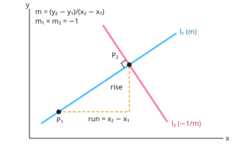

A-level Maths Year 12 · Topic 4
Coordinate geometry, vectors and binomial expansion in depth
Coordinate geometry, vectors and the binomial expansion connects algebra and geometry.
We will work with straight lines, distances and midpoints, and the equation of a circle, with tangents and chords.
Then we use vectors in two and three dimensions to prove geometric results, and expand brackets with the binomial theorem.
- 8 subtopics
- 434 questions
- Free: 4.1 notes and 10 questions
In this topic
- 4.1Straight lines: equations, gradients, parallel and perpendicular linesFree below · 37 questions
- 4.2Distance between points, midpoints and intersection of linesOpen in Full Marks · 70 questions
- 4.3Equation of a circle and completing the squareOpen in Full Marks · 62 questions
- 4.4Circle geometry: tangents, chords and circle theoremsOpen in Full Marks · 59 questions
- 4.5Two-dimensional vectors: components, magnitude, direction and position vectorsOpen in Full Marks · 51 questions
- 4.6Vectors in three dimensionsOpen in Full Marks · 47 questions
- 4.7Vector geometry: proofs, parallel vectors and collinearityOpen in Full Marks · 55 questions
- 4.8Binomial expansion of (a + bx)^n for positive integer n using Pascal's triangle and nCrOpen in Full Marks · 53 questions
4.1 · Free notes
Straight lines: equations, gradients, parallel and perpendicular lines

Key points
- The gradient of the line through (x₁, y₁) and (x₂, y₂) is m = (y₂ − y₁)/(x₂ − x₁), which is change in y divided by change in x. Always subtract in the same order on top and bottom.
- The gradient-intercept form is y = mx + c, where m is the gradient and c is the y-intercept. Rearrange to this form to read off the gradient.
- The point-gradient form is y − y₁ = m(x − x₁). It is the quickest way to write down a line when you know one point and the gradient.
- The general form is ax + by + c = 0, where a, b and c are usually required to be integers. If a question asks for this form, clear any fractions before you give your answer.
- For a line written as ax + by + c = 0, the gradient is −a/b. Check that you have not forgotten the minus sign.
- Parallel lines have equal gradients (m₁ = m₂). A line parallel to a given line therefore keeps the same gradient and changes only the point it passes through.
- Perpendicular lines satisfy m₁ × m₂ = −1, so one gradient is the negative reciprocal of the other (m → −1/m). The gradient 2/3 becomes −3/2.
- A horizontal line y = k has gradient 0. A vertical line x = k has an undefined gradient. These two are perpendicular to each other, and the m₁m₂ = −1 rule does not apply to them.
- The gradient equals tan θ, where θ is the angle the line makes with the positive x-axis. For example, m = −1 gives θ = 135°, measured anticlockwise.
- Three points are collinear if the gradients between each pair are equal. To find an unknown coordinate, set the two gradients equal and solve.
- In context problems, the gradient is the rate of change (for example £ per km) and the intercept is the fixed or starting value. State both with their units.
- Always check by substitution: a point lies on a line only if its coordinates satisfy the equation. Substituting a given point back in is a quick way to catch sign errors.
In more detail
- Worked two points: (−1, 4) and (3, −4) → m = −8 ÷ 4 = −2 → y − 4 = −2(x + 1) → y = −2x + 2, or 2x + y − 2 = 0.
- Worked perpendicular: perpendicular to y = −2x + 2 through (4, 1) → m = ½ → y − 1 = ½(x − 4) → x − 2y − 2 = 0.
- Worked checking perpendicular: 3x − 2y = 5 (m = 3/2) and 2x + 3y = 1 (m = −2/3) → 3/2 × (−2/3) = −1, so they are perpendicular.
- Worked model: C = 25 + 0.12m → a fixed charge of £25 plus 12p per mile.
Practice
Straight lines: equations, gradients, parallel and perpendicular lines: 10 questions
Pick an answer to check it, or open the answer for the explanation.
1. A(1, 2), B(3, 8) and C(5, k) are collinear. The value of k is:
- 14
- 11
- 18
- 8
Show answer
A: 14. Gradient AB = 6/2 = 3. For AC: (k − 2)/(5 − 1) = 3, so k − 2 = 12 and k = 14.
2. A line has gradient −1. The angle it makes with the positive x-axis, between 0° and 180°, is:
- 45°
- 315°
- 135°
- 225°
Show answer
C: 135°. tan θ = −1 gives θ = 135° (180° − 45°). 45° would be gradient +1.
3. A taxi charges a fixed £3 plus £2 per km. For C = 2d + 3 (C in £, d in km), the gradient 2 represents:
- the fixed charge of £2
- the cost per kilometre, £2 per km
- the total cost of a 3 km journey
- the distance travelled per £
Show answer
B: the cost per kilometre, £2 per km. The gradient is the rate of change of cost with distance: £2 for each extra km. The intercept, £3, is the fixed charge.
4. Which line is parallel to y = 3 − 2x?
- 2x − y = 3
- x − 2y = 3
- 2x + 4y = 5
- 4x + 2y = 5
Show answer
D: 4x + 2y = 5. y = 3 − 2x has gradient −2. 4x + 2y = 5 rearranges to y = −2x + 5/2, gradient −2. The others have gradients 2, ½ and −½.
5. A tank holds V litres after t minutes, where V = 500 − 20t. Which statement is correct?
- Starts with 500 litres and loses 20 litres per minute
- Starts empty and gains 20 litres per minute
- Starts with 20 litres and loses 500 litres per minute
- Starts with 500 litres and loses 20 litres per hour
Show answer
A: Starts with 500 litres and loses 20 litres per minute. The intercept 500 is the initial volume in litres. The gradient −20 is the rate of change: a loss of 20 litres per minute, since t is in minutes.
6. Which statement about the lines x = 3 and y = −2 is correct?
- They are not perpendicular because m₁m₂ ≠ −1
- They are perpendicular and meet at (−2, 3)
- They are parallel because both have gradient 0
- They are perpendicular and meet at (3, −2)
Show answer
D: They are perpendicular and meet at (3, −2). A vertical and a horizontal line are perpendicular. The rule m₁m₂ = −1 does not apply because a vertical gradient is undefined. They meet at x = 3, y = −2.
7. The line through (2, −1) perpendicular to 2x + 3y = 6 has equation:
- 2x + 3y − 1 = 0
- 3x − 2y − 4 = 0
- 2x − 3y − 7 = 0
- 3x − 2y − 8 = 0
Show answer
D: 3x − 2y − 8 = 0. 2x + 3y = 6 has gradient −2/3, so the perpendicular gradient is 3/2. Then y + 1 = (3/2)(x − 2), so 2y + 2 = 3x − 6, giving 3x − 2y − 8 = 0.
8. A line has gradient −1/√3. The angle it makes with the positive x-axis, between 0° and 180°, is:
- 30°
- 60°
- 120°
- 150°
Show answer
D: 150°. tan θ = −1/√3. The acute reference angle is 30°. A negative gradient means the angle is obtuse, so θ = 180° − 30° = 150°.
9. A(1, 2) and B(5, 8). The perpendicular bisector of AB has equation:
- 2x + 3y − 21 = 0
- 2x + 3y − 8 = 0
- 3x − 2y + 1 = 0
- 3x + 2y − 19 = 0
Show answer
A: 2x + 3y − 21 = 0. Midpoint = (3, 5). Gradient of AB = 6/4 = 3/2, so the perpendicular gradient is −2/3. Then y − 5 = −(2/3)(x − 3), so 3y − 15 = −2x + 6, giving 2x + 3y − 21 = 0.
10. A hire firm charges £70 for 2 days and £145 for 5 days (fixed fee plus a constant daily rate). The fixed fee and daily rate are:
- Fixed £25; £20 per day
- Fixed £20; £25 per day
- Fixed £50; £25 per day
- Fixed £20; £75 per day
Show answer
B: Fixed £20; £25 per day. Gradient = (145 − 70)/(5 − 2) = £25 per day. Then C = 25d + c, and 70 = 50 + c gives c = £20. The fixed fee is £20 and the daily rate is £25.
Keep going in Full Marks
Full Marks has 37 questions on Straight lines: equations, gradients, parallel and perpendicular lines (27 more than here), set out in practice levels. You also get notes and 3D models for all 8 subtopics of Coordinate geometry, vectors and binomial expansion in depth, plus games, timed exams and past papers.
On your exam board
- AQATopic 3: Coordinate geometry in the (x, y) plane, Topic 4: Sequences and series: binomial expansion, Topic 9: Vectors
- OCR ATopic 3: Coordinate geometry in the (x, y) plane, Topic 4: Sequences and series: binomial expansion, Topic 9: Vectors
- OCR BTopic 3: Coordinate geometry in the (x, y) plane, Topic 4: Sequences and series: binomial expansion, Topic 9: Vectors
- EdexcelTopic 3: Coordinate geometry in the (x, y) plane, Topic 4: Sequences and series: binomial expansion, Topic 9: Vectors
- CambridgeTopic 1.3: Coordinate geometry, Topic 1.6: Series